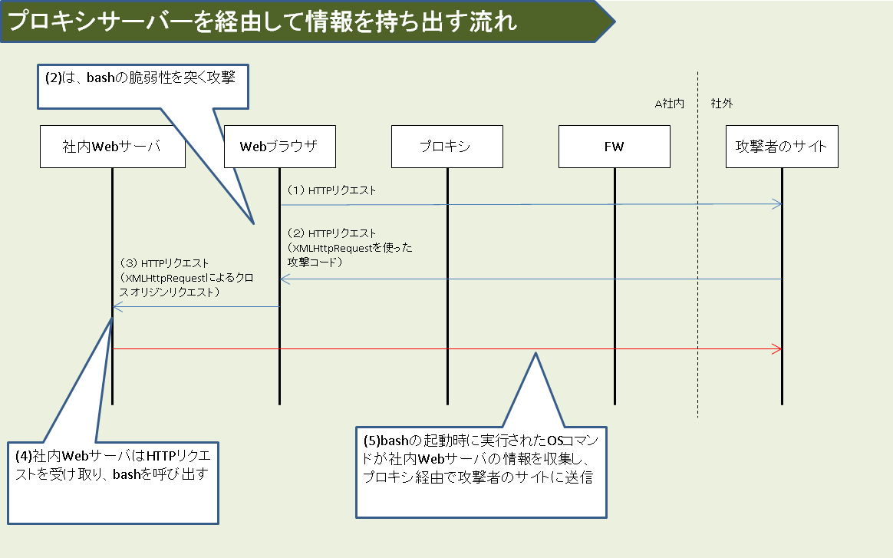

とあるＩＴエンジニアの知識整理
工事中...
情報処理試験のセキュリティスペシャリスト（現：情報処理安全確保支援士）の平成28年秋 午後Ⅱ問2でも出題されています。
まずWebにおける「オリジン」を理解する必要があります。
オリジン
（詳しくはRFC6454をご覧ください。） セキュリティの観点で生まれた考え方なのですが、Webサービスを提供する際、他のWebサービスを利用できないので利便性を損ねるという側面もあります。
そこで、異なるオリジンのサーバーにある選択されたリソースへのアクセスを許可することができる仕組みとして、オリジン間リソース共有(CORS：Cross-Origin Resource Sharing)が誕生しました。
facebookの「いいね」を設置できるのもCORSのおかげです。
その際、「Access-Control-Allow-Origin:*」と記載すると、攻撃者のサイトを含むすべてのサイトにクロスオリジンが許可されます。
XMLHttpRequest(XHR)を使用するとクロスオリジンリクエストが可能になります。これは、JavaScriptを使用してサーバと通信するAPIの一種です。
基本的にXMLHttpRequestでは、同一生成元ポリシによってクロスオリジンリクエストが制限されます。
しかし、XMLHttpRequest Level 2ではクロスオリジンリクエストが可能になりました。
現在使われているWebブラウザの殆どはXMLHttpRequest Level 2を実装しています。（参考書1 P266-267）
プロキシサーバーを経由して情報を持ち出す流れ
上記を利用すると、不正なサイトが社内Webサーバーから情報を取得することが可能となってしまいます。その際の流れは以下のようになっています。

(1)社内のWebブラウザが、攻撃者のサイトにアクセスしてHTTPリクエストを送信します。
(2)攻撃者のサイトには、不正なJavaScriptが置かれています。JavaScriptには、XMLHttpRequest(XHR)を使って、Webブラウザに社内Webサーバを攻撃させるコードが書かれています。
攻撃コードには、社内Webサーバでbashの脆弱性を突いて実効させるOSコマンドが記載されています。
(3)Webブラウザ上で不正なJavaScriptが実行されると、bashの脆弱性を突く攻撃コードが、社内WebサーバにHTTPリクエストとして送信されます。
(4)社内WebサーバのCGIを利用したWebアプリケーションは、HTTPリクエストを受け取ってbashを呼び出します。
その呼び出し時に、攻撃者が指定したOSコマンドが実行されます。
(5)攻撃者が指定したOSコマンドには、社内Webサーバの情報を集めるコマンドと、集めた情報をプロキシ経由で攻撃者のサイトに送るコマンドが書かれています。
それらが社内Webサーバ上で実行され、情報が持ち出されます。
攻撃者が社内Webサーバのアドレスを知ることができ、その情報を(2)の攻撃コードに組込むことができること
社内Webサーバにおいて、CGIを利用したWebアプリケーションプログラムが、bashを呼び出すこと
(4)のHTTPレスポンスヘッダとしてAccess-Control-Allow-Originが付加されていること
2. CORS(Cross-Origin Resource Sharing)
3. オリジン間リソース共有 (CORS)
4. Cross-origin resource sharing
※上記1.の2018年度版はこちら（絶対わかる情報処理安全確保支援士 2018年春版）